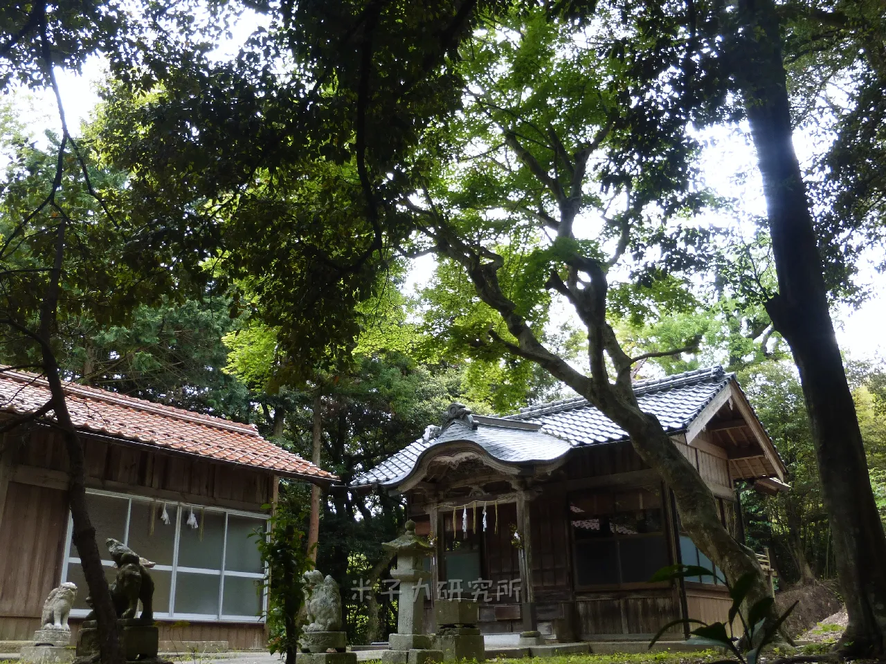
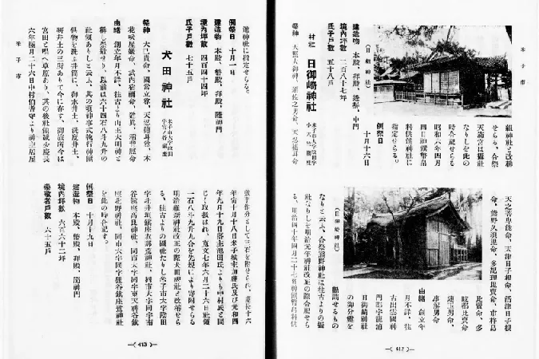
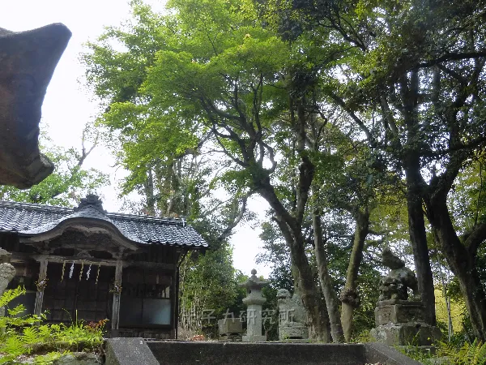
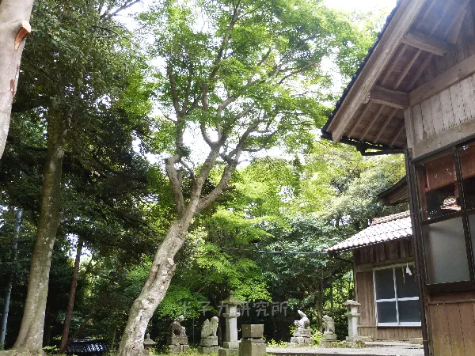
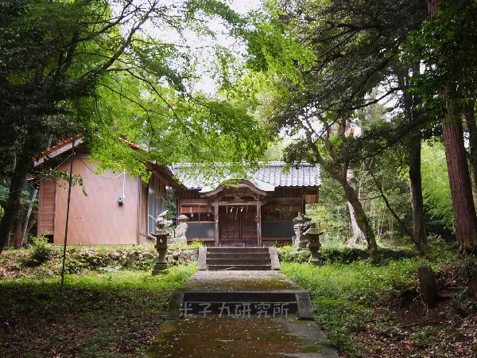
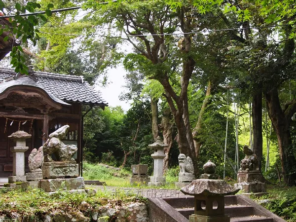
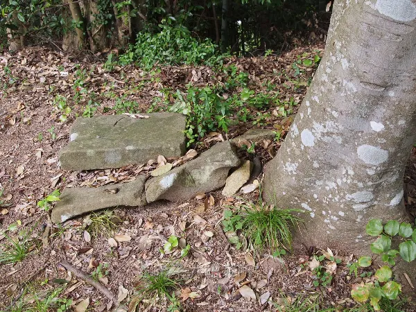
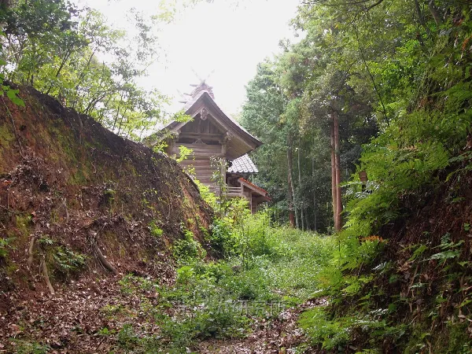

米子市陰田町奥陰田のサイノカミ
犬田神社の楓（カエデ）
最終更新：
米子市陰田町奥陰田のサイノカミさんは犬田神社にあります。
依代は拝殿前の楓（カエデ）、すなわち才ノ木です。
実はここの依代については複数の資料で触れられており、時代が進むにしたがって対象が移り変わってきた様子がうかがえます。

- 地域
- 鳥取県米子市
- 目印
- 犬田神社
- 対象
- 拝殿前の楓
- 参考
- 塞神考 No.392
- 石に刻まれた祈り2 No.11
- 鳥取県神社誌（S10）
- 鳥取県神社庁 犬田神社
犬田神社について
まず参考として「昭和10年版 鳥取県神社誌」と「鳥取県神社庁HP」から犬田神社についてどのように書いてあるかを見てみます。
- 犬田神社
- 米子市大字陰田字宮ノ谷鎭座

- 祭神
- 大巳貴命
- 國常立尊
- 天忍穂耳尊
- 木花咲屋姫命
- 武内宿禰命
- 道眞
- 稲背脛命
- 由緒
- 創立年月不詳、往古より山王大明神と稱し崇敬せり、以前は六十四石八斗九升の社領ありしと云ふ、其の頃神事式執行神饌供物を洗ふ井筒に、御水井土、洗度井土、研井土の三所ありて今に存す、御旅所今は宮田と唱へ草原あり、其の後社領減少慶長六年極月二十六日中村泊耆守より神主居屋敷手作分として三石を附せられ、慶長十六年寅十月十八日米子城主加藤氏及び元和四年九月十九日藩主池田氏よりも中村氏と同じく取扱はれ、寛文七年六月二十六日社領一石八斗九升九合を先規により寄附せらる
明治維新神社改正の際犬田神社と改稱せらる、往古よりの攝社たりし米子市大字陰田字北井垣鎭座衣那荒神社、同市大字同字南谷鎭座高良神社、同市大字同字東天神谷鎭座北野神社、同市大字同字狸谷鎭座鷺神社を此の時合祀す。- 例祭日
- 十月十九日
- 建造物
- 本殿、幣殿、拜殿、随神門
- 境内坪数
- 六百六十二坪
- 氏子戶数
- 六十五戶
国立国会図書館デジタルコレクション
https://dl.ndl.go.jp/pid/1050476/1/215
(参照 2023-01-05)
明治初年に地名（犬田庄奥陰田村）に因んで犬田神社と改称した。
この時、村内の摂社衣那荒神（木花咲屋姫命）、高良社（武内宿禰命）、天満天神（道真公）と鷺大明神（稲背脛命）を合祀した。
その他、令和3年に撮影した犬田神社の様子もどうぞ。

依代の楓🍁2021-05-04 
依代の楓🍁2021-05-04 
2021-09-25 
2021-09-25 
椿 2021-09-25 
2021-09-25
依代の変遷
まず平成30年の聞き取り（石に刻まれた祈り2）による「拝殿前のカエデ」が、最新の調査記録です。
終戦後間もないころのお話しです。
次に『塞神考』（昭和後期調査）では「犬田神社の椿」とされています。
典拠は不明ですが、実際に楓の隣には椿の大木があります。
時代を遡ると、先述の『鳥取県神社史』にあるとおり、明治初年に合祀されたのが道祖神的性格を持つ稲背脛命（鷺大明神）。
そして最も古い記録が、『塞神考』で引用されていた寛政八年（1796）の神社改帳にある「奥陰田村 幸神 無社 山王社地に座す」という記述です。
◇◇◇
手に入る限りの情報は以上。
ここから資料の断片をつないだ推測になります。
山王大明神（犬田神社）の社領内にあった鷺大明神（稲背脛命）がもともと幸神としてお祀りされていた。
これが明治時代の神社改正で合祀されることになり、サイノカミ（幸神）の行事を境内の手頃な木で行うようになった。
時代によりそれが楓であったり椿であったりした。
こんな感じでどうだろう？
ぽんきちくん。
推測のとこ全部いらなくないですか？